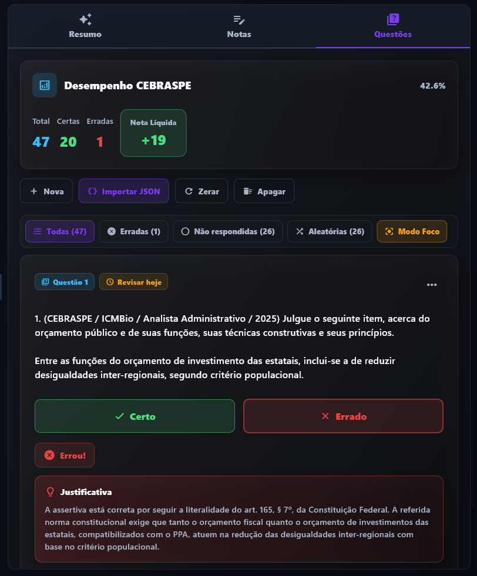

Aprenda a usar o Lumina para organizar estudos, criar questões, acompanhar foco e revisar com
mais consistência durante o beta fechado.
1. Primeiros Passos no App
Seja bem-vindo ao Lumina! O fluxo de configuração inicial é rápido e focado em colocar você no estado de
fluxo em minutos.
1
Crie sua Conta
Abra o Lumina e cadastre-se usando e-mail ou autenticação com Google. Dados locais ficam no
dispositivo e recursos remotos, como backup e Comunidade, dependem da versão instalada e do plano
disponível.
2
Cadastre suas Matérias
No painel lateral, acesse "Matérias" e insira os temas que você precisa estudar (ex: Direito
Administrativo, Medicina Interna, Matemática). Você pode associar cores e limites de metas diárias
de foco para cada matéria.
3
Inicie seu Primeiro Ciclo
Volte ao Dashboard, clique em "Iniciar Foco" no timer Pomodoro e concentre-se até o fim do ciclo.
O Lumina registra tempo, XP e progresso para apoiar sua rotina.
2. Aba Comunidade
O Lumina inclui uma area de Comunidade em evolucao, com perfil publico, grupos, rankings e controles
de visibilidade para evitar exposicao indevida dos seus dados de estudo.
1
Participe de Grupos de Estudo
Crie ou entre em grupos publicos e privados para acompanhar ranking, score e constancia de outros
estudantes dentro das permissoes do app.
2
Entenda o que fica visivel
A Comunidade prioriza indicadores sociais e dados autorizados. Conteudos privados de estudo nao
devem ser tratados como publicos sem uma acao clara de compartilhamento.
3
Ranking e constancia
Mantenha sua rotina de estudos ativa para acompanhar posicao, score e progresso social quando a
Comunidade estiver habilitada para sua conta.
3. Fluxo de Revisões Espaçadas
Use o fluxo de revisão para retornar às questões certas com base no seu histórico. O objetivo é reduzir
esquecimento por prática ativa e acompanhamento contínuo.
1
Criação de Questões
Ao assistir a uma videoaula ou ler um material de estudo em PDF, crie questões diretamente no
aplicativo. Insira o enunciado, o gabarito oficial e a respectiva
justificativa de forma objetiva.
2
Classificação Automatizada de Dificuldade
A classificação do intervalo de revisão ocorre de forma 100% automatizada com base na curva do
esquecimento de acordo com os seus acertos e erros. À medida que você responde
corretamente a uma questão (acerto), o algoritmo do
Lumina agenda a próxima revisão para uma data mais distante. Em contrapartida, caso você erre a
questão (erro), ela retornará em um intervalo de tempo muito mais curto para garantir a fixação
imediata do conceito.
3
Sessões Otimizadas de Resolução
Diariamente, acompanhe as questões pendentes e priorize o que precisa de reforço. Nenhuma ferramenta
garante resultado, mas uma rotina consistente melhora a tomada de decisão nos estudos.
4. Prompts de IA para Estudo
Utilize inteligências artificiais (como ChatGPT, Gemini ou Claude) para otimizar a sua rotina de estudos.
Copie os prompts exclusivos abaixo e utilize-os para mapear pegadinhas, criar resumos de alta qualidade e
formatar questões prontas para importação no Lumina.
Instrução de Uso: Basta clicar no botão "Copiar Prompt" de cada cartão e colar no chat da
Inteligência Artificial de sua preferência junto com o material explicativo correspondente.
Importador Automático de QuestõesRecomendado
Prompt estruturado para extrair questões do CEBRASPE (Certo/Errado) a
partir de PDFs ou resumos, convertendo-as em blocos JSON válidos para importação no app.
Você é um Especialista em concursos públicos e Engenheiro de Dados de
Aprendizagem.
Seu objetivo é extrair TODAS as questões da banca CEBRASPE (Certo/Errado) de um PDF ou texto,
devolvendo um JSON pronto para um aplicativo de Repetição Espaçada (SRS).
CONTEXTO DO ALUNO:
O usuário final está se preparando para o concurso de Auditor do TCU (Tribunal de Contas da União).
Siga este processo mental e regras rigorosamente:
FASE 1: ANÁLISE E MAPEAMENTO (Silencioso)
- Leia todo o documento e encontre TODAS as questões CEBRASPE Certo/Errado. Não descarte nenhuma
questão Certo/Errado.
- Elimine apenas questões que sejam de Múltipla Escolha (A, B, C, D, E).
FASE 2: LIMPEZA, FORMATAÇÃO E SÍNTESE DE COMENTÁRIOS
- O texto da assertiva deve estar SEMPRE separado do texto de apoio/cabeçalho por EXATAMENTE duas
quebras de linha (\n\n). Ex: Comando da questão, duas quebras, assertiva.
- GABARITO: Associe a resposta ("Certo" ou "Errado") à questão. Se não encontrar no material, forneça
o gabarito correto.
- JUSTIFICATIVA (SÍNTESE ATIVA): Localize o comentário do professor para a questão. Como os
comentários de PDFs costumam ser longos e prolixos, você DEVE SINTETIZÁ-LOS. Vá direto ao ponto: diga
ONDE está a pegadinha ou POR QUE a assertiva está correta, citando a regra, lei, jurisprudência ou
conceito-chave de forma didática e enxuta. O texto da justificativa deve focar na revisão rápida (1 a
3 parágrafos curtos). Remova saudações, conversas paralelas, números de páginas e propagandas.
FASE 3: SAÍDA EXCLUSIVA (Regra de Ouro)
- Sua resposta final deve ser ÚNICA E EXCLUSIVAMENTE o bloco de código JSON válido.
- É OBRIGATÓRIO que o JSON esteja encapsulado em um bloco de código Markdown, começando com ```json e
terminando com ```.
- Não diga "Aqui estão as questões", não explique o processo, não faça introduções.
Formato exato esperado:
```json
[
{
"enunciado": "1. (CEBRASPE / Órgão / Ano) Texto de apoio...\n\nAssertiva da questão.",
"gabarito": "Certo",
"justificativa": "A assertiva está correta. Segundo o art. X da Lei Y, o conceito de Z abrange
exatamente a situação descrita. Note que a banca não exige o requisito W, o que costuma ser uma
pegadinha frequente."
},
{
"enunciado": "2. (CEBRASPE / Órgão / Ano) Texto de apoio...\n\nAssertiva da questão.",
"gabarito": "Errado",
"justificativa": "O erro da questão está na palavra 'exclusivamente'. De acordo com a jurisprudência
do STF (Info XYZ), existem exceções à regra descrita quando..."
}
]
```
Resumo Focado & Bateria CEBRASPENotebookLM
Atua como auditor do TCU e gera fichas de revisão analíticas de alta
retenção (High-Yield), além de baterias inéditas no formato Certo/Errado.
Atue como um Auditor de Controle Externo do TCU e Professor Especialista em
provas de alto nível da banca CEBRASPE.
A sua missão é receber o PDF que vou fornecer, identificar automaticamente a qual disciplina ele
pertence (Direito, Exatas, TI, Contabilidade, Economia/AFO ou Auditoria etc) e extrair uma Ficha de
Revisão de Alto Rendimento (High-Yield) adaptada para essa matéria.
O objetivo NÃO é um resumo exaustivo. Descarte a "encheção de linguiça" e entregue-me apenas a
essência, atuando como um filtro implacável do que o CEBRASPE realmente cobra.
Diretrizes Universais de Análise:
Se for Direito/Auditoria: Foco total na lei seca, jurisprudência dominante, normas, prazos e exceções.
Se for Exatas/Contabilidade: Foco no passo a passo de resolução, fórmulas, lógica de débitos/créditos
e aplicação prática.
Se for TI/Economia: Foco na estrutura conceitual, sintaxe principal e relações de causa e efeito.
Utilize português do Brasil, linguagem objetiva e formato escaneável.
Estrutura Obrigatória da sua Resposta (Use formatação em Markdown):
🧠 1. O Núcleo Duro (O Essencial):
Em bullet points diretos, liste as regras absolutas, fórmulas centrais, normativos ou lógicas de
funcionamento abordadas no texto. O que eu TENHO a obrigação de saber?
🎯 2. Radar CEBRASPE (O que mais cai hoje):
Indique, com base nas tendências atuais da banca para esta disciplina, quais partes específicas desse
texto têm a maior probabilidade de virar questão de prova.
🚨 3. Mapa de Pegadinhas e Confusões:
Destaque exatamente onde a banca tenta derrubar o candidato neste assunto:
Trocas e Confusões: (Ex: "vinculado" vs "discricionário"; "regime de caixa" vs "competência"; "achado"
vs "evidência").
As Exceções e Armadilhas: (A banca ama as exceções legais e as armadilhas matemáticas. Liste-as de
forma destacada).
⚡ 4. Revisão em 3 Segundos:
Uma única frase de impacto que resuma a ideia central de todo o conteúdo fornecido.
📝 5. Bateria de Questões (Prática CEBRASPE):
Com base estritamente no material fornecido, crie exatamente 10 questões inéditas ou adaptadas no
estilo CEBRASPE (afirmações para julgar como CERTO ou ERRADO).
Distribua as questões abrangendo todo o conteúdo do documento (teoria e casos práticos, se aplicável)
.Evite blocos de texto contínuos; use uma lista numerada para organizar as perguntas e os gabaritos.
REGRAS DE FORMATAÇÃO OBRIGATÓRIAS:
Uma questão por parágrafo: Nunca coloque duas questões na mesma linha. Use um parágrafo numerado para
cada uma.
Bloco de Gabarito Separado: Após as 10 questões, insira o título "--- GABARITO COMENTADO ---".
Estrutura do Gabarito: Cada item do gabarito deve ocupar seu próprio parágrafo, seguindo o modelo:
[Número] - [✅Certo ou ❌Errado]: [Justificativa].
5. Como Importar Questões Automaticamente
Não perca tempo digitando questão por questão. O Lumina permite a importação
ágil de bancos de dados de perguntas e exames externos de forma automatizada.

Painel de Questões & Desempenho
Esta área exibirá a foto real da tela de importação de questões assim que você salvá-la em
assets/images/import.png.
1
Otimize seu PDF de Exercícios
Muitos materiais de estudo em PDF contêm dezenas de páginas, mas apenas uma fração delas possui as
questões comentadas pelos professores (por exemplo, em um arquivo de 100 páginas, talvez apenas 20
sejam de exercícios). Utilize uma ferramenta ou editor de PDF para extrair e gerar um novo arquivo
contendo exclusivamente as páginas com as questões comentadas.
2
Processe o Material com Inteligência Artificial
Acesse a Inteligência Artificial de sua preferência (como ChatGPT, Gemini ou Claude), anexe o novo
PDF simplificado contendo apenas as questões comentadas e insira o prompt **Importador Automático de
Questões** (disponível na seção 4). A IA fará a leitura inteligente do material e estruturará todas
as questões em um formato de código JSON perfeitamente limpo, livre de conversas paralelas ou
propagandas.
3
Execute a Importação Automática no Lumina
Copie a saída JSON gerada pela Inteligência Artificial e salve-a em um arquivo local com a extensão
.json (ou copie diretamente o texto). Na aba Questões dentro do
aplicativo Lumina, clique no botão "Importar Questões", selecione a matéria correspondente, envie o
arquivo JSON e confirme. As perguntas, gabaritos e explicações simplificadas do professor serão
integradas instantaneamente ao seu ciclo de estudos!